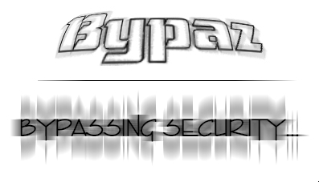

Beste bezoeker,
Hetgeen u hier ziet is een gekraakte webpagina.
Deze webpagina werd gekraakt door Bypaz, een nieuw Belgisch hackersduo.
De reden waarom wij nu deze pagina gekraakt hebben is vrij simpel; in onze belgische wetgeving kent men nauwelijks het verschil tussen hackers en crackers. Om even te verduidelijken : hackers zijn diegenen die bugs opsporen en dan de admins verwittigen dat zij hun systeem moeten patchen of updaten. Crackers zijn diegenen die gewoon voor het plezier, of omdat ze enige roem willen verwerven of uit ethische overwegingen (bijvoorbeeld een kinderporno website kraken) een webpagina veranderen. Hetgeen we nu dus gedaan hebben is een voorbeeld van cracken, alhoewel we toch hackers zijn... Onze frustratie is begrijpelijk want wij willen niks anders dan een onderscheid tussen hackers en crackers. Gelukkig zijn er mensen in de politiek, zoals Senator Q bijvoorbeeld, die wel bewust zijn van het probleem en ernaar streven om dit probleem de wereld uit te helpen.
Dus dit is infeite een boodschap naar de politici toe, die HEEL ernstig mag opgenomen worden, want we laten het hier niet bij...
Greets : securax.org, htwX, nostalg1c, r00t-dude, Zoa Chien, Zymot1c, ... en vele anderen.
Link : Senator Q website